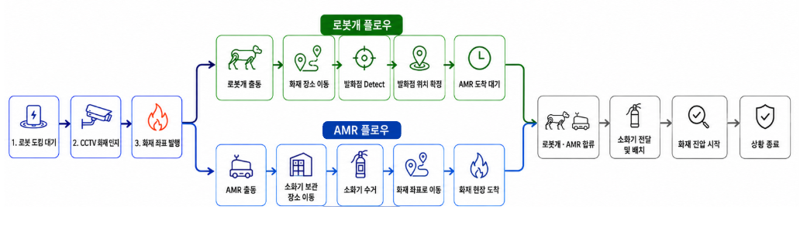

PROJECT TITLE
Multi-Robot Fire Response System
Overview
Spot, AMR, Vision, Navigation, Manipulation 등 서로 다른 기술 요소를 하나의 Mission으로 연결해 화재 감지 → 발화점 탐색 → 소화기 운반 → 현장 합류 → 초기 진압까지 수행하는 다중 로봇 시스템을 설계했습니다.
개별 기능 구현에 앞서 요구사항을 로봇 기능 단위로 분해하고 구현 가능성을 검증한 뒤, 이를 기반으로 Mission Flow, System Architecture, Interface를 선행 설계했습니다.
Problem
다중 로봇 시스템은 각각의 기능이 정상적으로 동작하더라도 모듈 간 연결 방식이 맞지 않으면 전체 Mission이 실패할 수 있는 구조였습니다.
특히 다음과 같은 Integration Risk가 있었습니다.
- Spot과 AMR의 역할 및 Task 범위 불명확
- Vision 결과와 Navigation / Manipulation 간 데이터 형식 불일치 가능성
- Camera / Robot / Map 간 Coordinate System 차이
- 비동기적으로 동작하는 여러 Robot Task의 상태 관리
- 통합 단계에서 Interface 문제가 발견될 경우 재설계 및 일정 지연 가능성
따라서 개발을 바로 시작하기보다 전체 Mission 관점에서 구현 가능성과 통합 구조를 먼저 검증할 필요가 있었습니다.
Analyze
비즈니스 요구사항을 실제 로봇이 수행해야 하는 기능으로 분해하고, 각 기능에 대해 다음 항목을 기준으로 Technical Feasibility를 검토했습니다.
- 어떤 Robot / Module이 수행하는가
- 필요한 Sensor / AI / Robot 기능은 무엇인가
- Input / Output Data는 무엇인가
- 다른 Module과 어떤 방식으로 연결되는가
- 현재 환경에서 실제 구현 가능한가
분석 결과, 프로젝트의 주요 리스크는 개별 AI 모델의 성능보다 통신 방식·Coordinate System·State Transition·Task Completion 조건과 같은 Integration Interface의 불일치라고 판단했습니다.
이에 기능 개발 전에 검증된 기능을 기준으로 Mission Flow와 System Architecture를 먼저 확정하는 방식으로 프로젝트를 진행했습니다.
Action
1. Technical Feasibility
화재 대응 요구사항을 실제 Robot 기능으로 분해하고 구현 가능성을 선행 검증했습니다.
Detection → Search → Navigation → Delivery → Manipulation → Fire Response
검증 결과를 기준으로 실제 프로젝트에서 구현할 기능과 각 Robot의 역할을 확정했습니다.
2. Mission & System Architecture
전체 화재 대응 시나리오를 설계하고, Spot·AMR·Vision·Navigation·Manipulation의 역할과 데이터 흐름을 기준으로 전체 System Architecture를 정의했습니다.

Fire Detection & Perception
화재 및 발화점 정보를 인식하고 Robot이 사용할 수 있는 위치 정보를 생성합니다.
- CCTV 기반 화재 감지
- Spot Vision 기반 발화점 탐색
- Object Detection
- Position Estimation
Multi-Robot Navigation
Spot과 AMR이 각자의 Mission에 따라 이동하고 현장에서 합류합니다.
- Spot 발화점 탐색
- AMR 소화기 운반
- Localization / Path Planning
- Goal Navigation
- Rendezvous
Manipulation & Fire Response
현장에 도착한 Robot이 초기 대응에 필요한 Physical Action을 수행합니다.
- 소화기 접근 및 전달
- Manipulation / Grasp
- 발화점 대상 투척
- 초기 진압 Action
3. Interface & Integration Design
각 모듈을 독립적으로 개발하더라도 최종적으로 동일한 기준으로 연결될 수 있도록 개발 전에 Integration Rule을 정의했습니다.
- ROS2 Topic / Service / Action
- Message Format
- Camera / Robot / Map Coordinate Frame
- Mission / Robot State Transition
- Task Start / Complete 조건
이후 단일 기능 → 모듈 간 연결 → Robot 간 연동 → End-to-End Mission 순으로 단계적으로 통합했습니다.
Result
- 아이디어 수준의 요구사항을 Technical Feasibility → Mission Design → System Architecture → Interface Definition → Integration 단계로 구체화했습니다.
- ROS2 통신, 좌표계, 상태 전이 등 통합 기준을 사전에 정의하고 Spot·AMR·AI 모듈을 하나의 시스템으로 통합했습니다.
- CCTV 화재 감지 → Spot 발화점 탐색 / AMR 소화기 운반 → 현장 합류 → 초기 진압 까지 이어지는 End-to-End Multi-Robot Scenario를 구현했습니다.